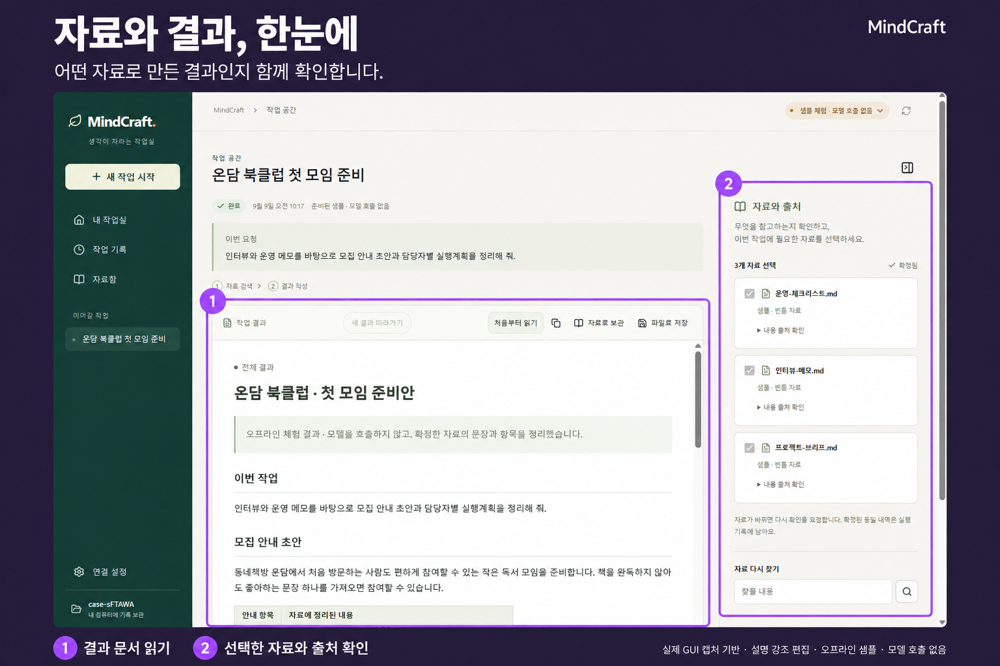
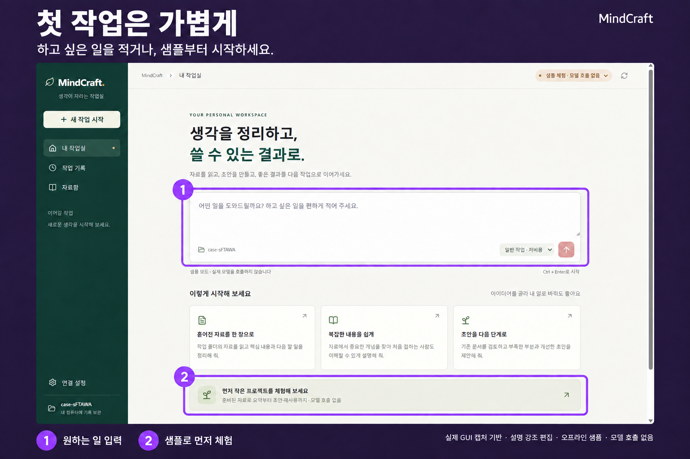
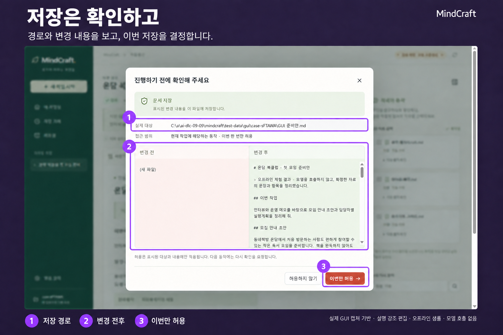
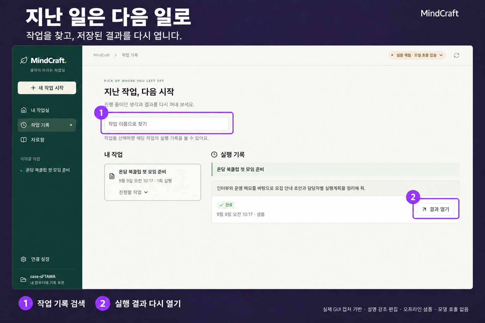
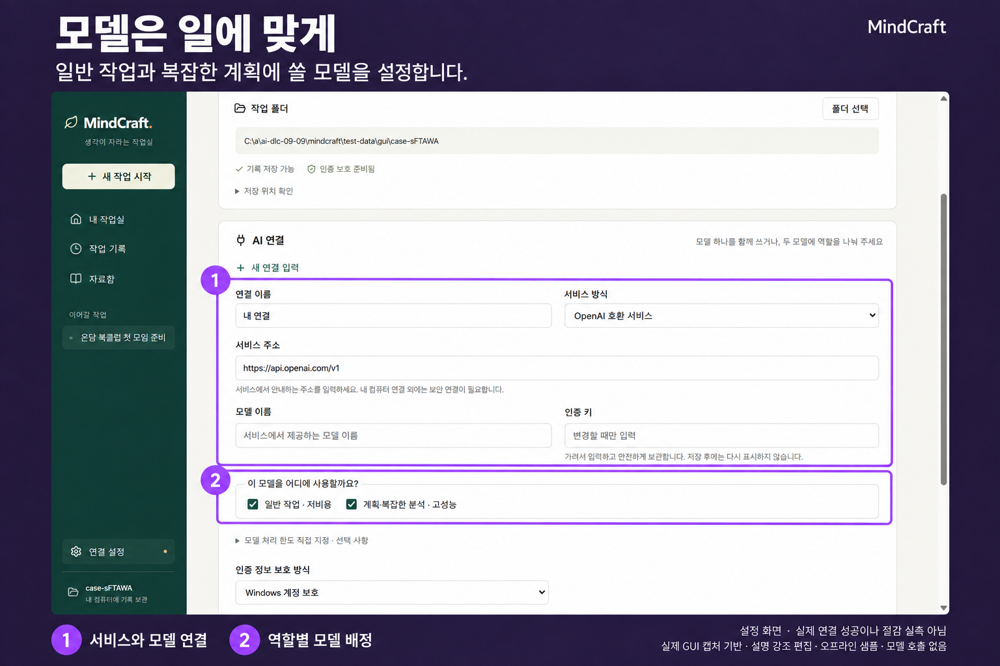

내 일을 이어주는 WINDOWS 개인 AI · 1분 소개
설정하느라 한참.
내 일은 언제 하죠?
실행 파일 하나로 시작하고, 필요한 도구는 한곳에.
처음 쓰는 사람도 안내를 따라 내 업무부터.
● 개발 중 · 실제 GUI 오프라인 샘플 공개
AI 생성 콘셉트 · 실제 제품 화면 아님
영상을 불러오지 못했습니다. 영상 직접 열기 ↗
2026.09.09 · 실제 실행 화면
말로 소개한 경험을, 화면으로.
오프라인 샘플 · 모델 호출 없음
자료 확인 → 결과 읽기 → 저장 승인 → 작업 기록. 직접 실행한 GUI에서 확인하세요.
01 자료와 결과, 한눈에

02 첫 작업은 가볍게

03 저장은 확인하고

04 지난 일은 다음 일로

05 모델은 일에 맞게

실제 화면 기반 · AI로 설명과 강조 표시를 더한 편집본입니다. 원본은 각 이미지 아래에서 확인하세요. 현재 지원 범위 보기 ↓
딸깍 뒤에는, 이 다섯 가지.
시작부터 다음 작업까지.
한눈에 읽고, 궁금한 것만 눌러보세요.
01 / 쉬운 시작
에이전트를 몰라도,
내 일은 아니까.
실행 파일을 열고, 안내에 따라 모델과 자료를 연결합니다. 무엇부터 할지 모르겠다면 샘플 작업부터 해보세요.
조금 더 알아보기
1. 실행 파일 열기
별도 개발 도구 설치 없이 시작하는 것이 목표입니다.
MindCraft는 무엇을 하나로 연결하나요?
쉬운 시작부터 요청 확인, 지식 재사용까지. 내 일을 이어주는 작업 환경을 하나로 연결합니다.
도구를 하나씩 구성하는 부담을 줄이고, 작업 순서에 따라 결과를 확인합니다. 다시 쓸 자료는 골라서 다음 작업에 활용합니다.
하네스가 뭔가요?
AI가 일을 수행하는 데 필요한 도구와 절차를 뜻합니다. MindCraft는 쉬운 시작, 작업 절차, 지식 재사용, 모델 배정을 하나의 프로그램으로 연결합니다.
현재 지원 범위와 실행 버전
2026년 9월 9일 기준, 실제 GUI의 오프라인 자료→결과→저장 승인→기록 여정과 단일 EXE 패키지가 있습니다. AI-DLC는 코드 생성 진행 중이며, 실제 모델 연결·작업별 전체 검증·비용 및 속도 효과·깨끗한 Windows 환경 검증은 아직 완료되지 않았습니다. 공개 캡처는 최신 개발 화면으로, 별도 전달하는 검증된 이전 EXE와 UI 차이가 있습니다.
권한·모델 연결·실행 안내까지 자세히 보고 싶어요.
파일 변경 전 승인, 중단 후 재개, 자료의 출처와 재사용 기준을 포함한 상세 설명입니다.
제품 상세 소개 ↗ · 시작 준비 안내 ↗준비는 줄이고, 다음 일은 더 수월하게.
MindCraft의 다섯 가지 다시 보기 ↑